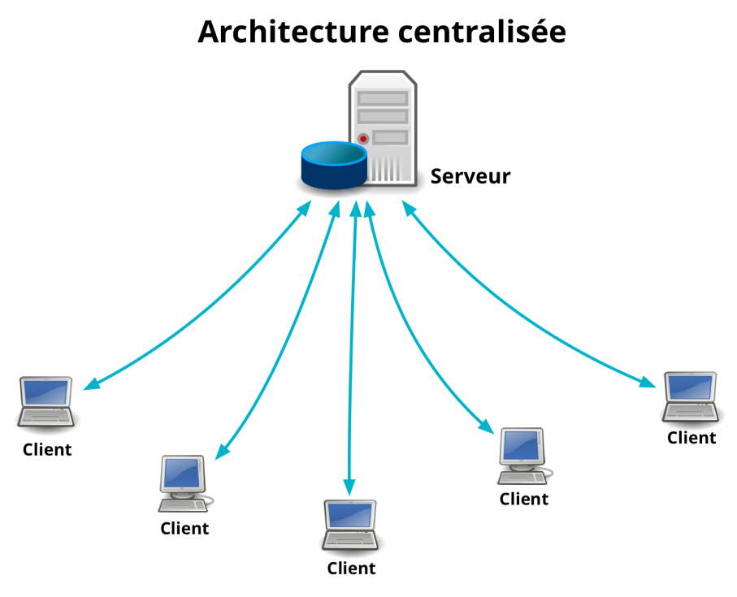
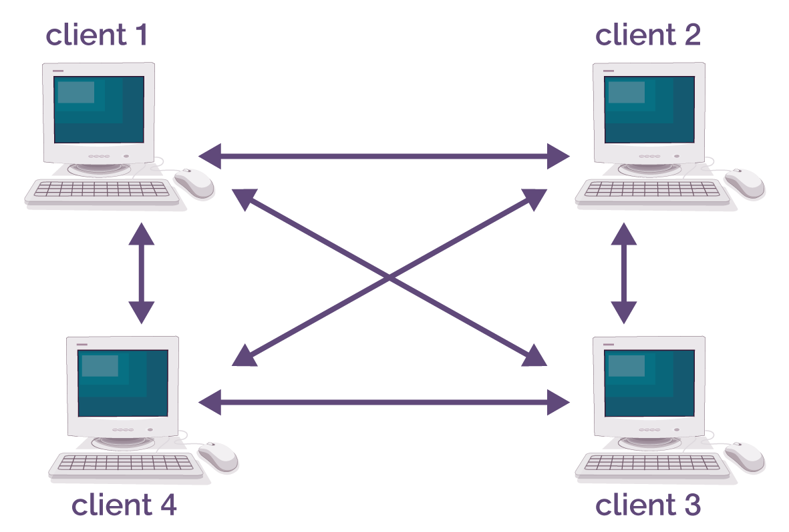

INTRODUCTION
Il existe deux grands modèles d’architecture d’échange de données sur Internet. On retrouve le modèle classique client-serveur : les ressources sont stockées sur un serveur et les utilisateurs, appelés clients, envoient des requêtes à ce serveur auxquelles le serveur répond. Le second modèle est le modèle peer-to-peer (ou P2P) ci-dessous
Le concept de peer-to-peer est apparu en 1969 dans une publication intitulée « Request for Comments by the Internet Engineering Task Force ». Une décennie plus tard, un réseau P2P commuté est lancé : Usenet. Inventé en 1979 et lancé publiquement l’année suivante à l’Université de Caroline du Nord à Chapel Hill and Duke University, c’est un système en réseau de forums. Usenet a été le premier à fonctionner sans serveur central ni administrateur.
Mais ce n'est qu'en 1999, quelque 20 ans plus tard, qu'un réseau P2P a réellement prouvé son potentiel en tant qu'application sociale utile. Shawn Fanning, un étudiant américain, lance Napster. Cette plateforme mondiale de partage de musique a popularisé les logiciels P2P auprès du grand public. Les utilisateurs recherchaient des chansons ou des artistes via un serveur qui indexait les titres se trouvant sur le disque dur de chaque ordinateur connecté au réseau.
Le réseau P2P se distingue d'un réseau classique par son fonctionnement assez singulier. En effet, comme le montre la photo à côté, il n'y a pas de serveur central où sont centralisées toutes les informations et qui fournit les ressources informatiques sur demande des périphériques mais les fichiers sont répartis sur les différents ordinateurs composant le réseau ce qui assure une meilleure rapidité et fluidité du réseau. Et en adoptant ce fonctionnement, l'avantage est d'éviter qu'un serveur web central ne sature lorsqu'il est très sollicité. Avec le P2P, chaque internaute télécharge un fichier et le redistribue immédiatement. Le principe est simple : si l’un des utilisateurs du P2P possède un document à diffuser sur la toile, il peut le partager grâce à une plateforme de téléchargement (il devient alors un serveur), et chacun des utilisateurs du réseau pourra y avoir accès. La taille du fichier à partager peut être importante car plusieurs internautes peuvent se partager une petite partie du fichier et permettre à quiconque qui en fait la demande d’obtenir la totalité du fichier. Il faut s'assurer toutefois de disposer du même logiciel P2P. Le plus connu reste BitTorrent.
CONCLUSION
On ne distingue pas les ordinateurs au sein d’un même réseau, c’est pourquoi on dit que ce modèle fonctionne d’égal à égal. Plusieurs ordinateurs peuvent ainsi communiquer entre eux via un réseau et s’échanger diverses informations.